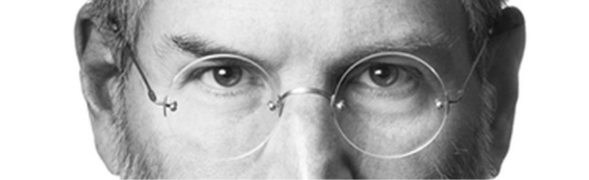
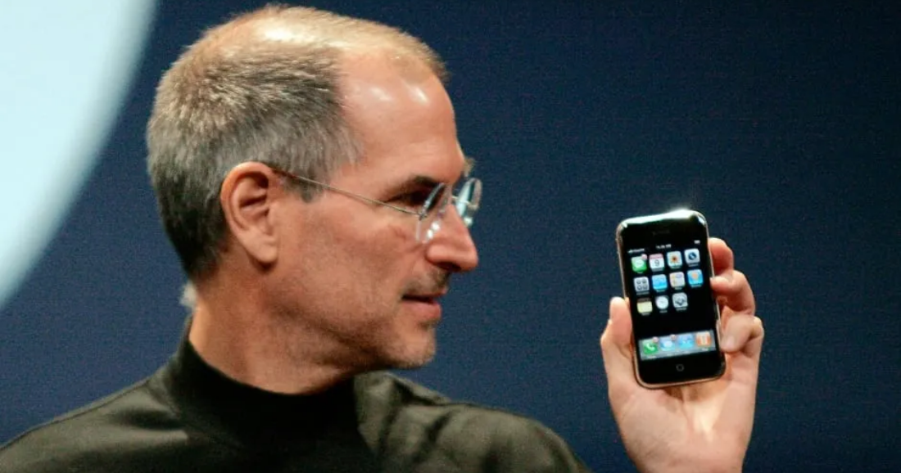

BEST CEO
경영은 기존 질서와 철저히 다르게

스티브 잡스는 단순히 능력있는 CEO를 넘어 IT계를 주도한 인물이었고
또한 실적이 부진하거나 제대로 빛을 보지 못한 회사들을 뛰어난 창의력과 적극성으로 기업 가치를 크게 끌어올리는 수완을 발휘하였다.
곤경과 실패, 그리고 몰락 역시 경험했으나 이를 만회하고도 남을 정도로 화려하게 재기했다는 점에서 본보기가 될 만한 인물.
암이 아니었다면 그의 열정과 성취욕으로 볼 때 노년까지 일선에서 왕성히 활동했을 가능성이 높다.
트렌드를 창조하고 자사 제품을 새로운 메인스트림의 정점에 올려놓는 데에 성공함으로써 그의 탁월한
안목을 여러 번 증명하였으며 이런 경향은 시간이 흐를수록 더욱 두드러졌다. 마우스, GUI, 컴퓨터 그래픽스, MP3 플레이어와 App Store, 터치 스크린 핸드폰, 태블릿 PC 등은 물론 그만의 발명품이나 유물은 아니지만,
이들의 상용화와 보편화를 가속화시키고 인지도를 대폭 높이는 데에 잡스가 큰 기여를 했다는 점은 분명하다.
사실 2007년 등장한 iPhone은 그야말로 혁명이었다. 쉬운 인터페이스와 파격적인 디자인은 전 세계 휴대폰 사용자들을 매료시켰고, 이후 출시된 대부분의 스마트폰에 큰 영향을 미쳤다.
한편 그는 새로운 기기들의 단순함과 조작의 편리성을 강조하면서도 다른 한편으로는 기능적이고 참신한 디자인을 선보여,
출시된 제품들을 하나의 문화 아이콘으로 자리잡게 하는 능력도 보여주었다. 또한 이미 경쟁이 치열한
분야에 후발 주자로 뛰어들어서 단시간 내에 강한 입지를 구축하고 선구적인 역할까지 수행하게 되었던 것을 보면 그의 사업 능력이 상당히 비범했음을 알 수 있다.
Apple이나 자기 자신의 이미지 관리와 활용에도 능숙했으며, 20세기와 21세기의 IT시장 역사에 굵은 획을 그은 위대한 인물로 보아도 손색이 없을 듯하다.
낭만은 없는 이야기이지만, 기업활동을 통해 어마어마한 부를 창출해냈다. 오늘날 애플의 시총은 3조 달러이며, 국가로 치환하면 세계 GDP 7위에 해당한다. 앱스토어의 2022년 경제효과만 해도 무려 1조 1천억 달러이다.
애플이 대한민국에만 창출한 일자리가 대략 32만 5천개이다.
인간적이고 윤리적인 면에선 많은 아쉬움과 실망감이 있으나 자신의 카리스마, 추진력, 기획력으로 혁신을 일으키고 기업을 키워내는 능력만큼은 독보적이었다고 볼 수 있다.
As a Designer
간단하고 단순하게 하라

티브 잡스는 고객들에게 애플 제품을 좋은 인상으로 접근하기 위해서 실리콘밸리의 손꼽히는 홍보 전문가 레지스 매케나를 설득 했습니다 일찍이 레지스 메케나느 인텔 광고를 만들었었고 그 광고애 스티브잡는 매료된 것이였죠 결국 매케나는 회사의 애플 2 의 제품 소개 팸플릿을 제작하는 작업에 착수하게 되었습니다.
가장 먼저 필요한 일은 롱 웨인이 만들었던 고풍스러운 회사 로고를 바꾸는 것 이였습니다. 잡스는 "너무 유치하게 만들지 말아" 달라고 요청했죠
"단순함이란 궁극의 정교함이다" 라는 말을 정의한 현 애플 최고 디자이너 조나단 아이브가 스티브 잡스의 디자인 철학을 뒷받침했습니다. "우리는 왜 단순한 게 좋을 거라고 생각할까요?"
물리적인 제품을 다룰 때 그것을 제압할 수 있다고 느끼고 싶어하기 떄문입니다. 복잡함 것에 질서를 부여하면, 제품이 사용장게 순종하도록 하는 방법을 찾을 수 있습니다.
단순함은 단지 하나의 시각적인 스타일이 아닙니다 미니멀리즘의 결과이거나 잡다한 것의 삭제도 한 제품이 나올 수도 있습니다. 더 좋은 방법은 보다 깊이 들어가 제품에 대한 모든 것과 그것의 제조 방식을 이해하는 겁니다. 본질적이지 않은 부분들을 제거하기 위해서는 해당 제품의 본질에 대해 깊이 이해하고 있어야 합니다
스티브 잡스도 <<포춘>> 에 아이브의 디자인 정의를 추신합니다. "대부분의 사람들에게 디자인은 '겉모습'을 뜻합니다. 하지만 내 생각엔, 그건 디자인의 의미와 정반대 입니다.
디자인은 인간이 만든 창작물의 근간을 이루는 영혼입니다. 그 영혼이 결국 여러 겹의 표면들을 통해 스스로를 표현하는 겁니다.
결국 스티브 잡스와 조니 아이브는 맹목적인 디자인 생산을 경멸했고 단순함으로써 복잡함을 뛰어넘는 창작물들을 생산하게 됩니다